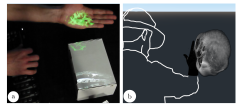
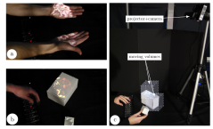
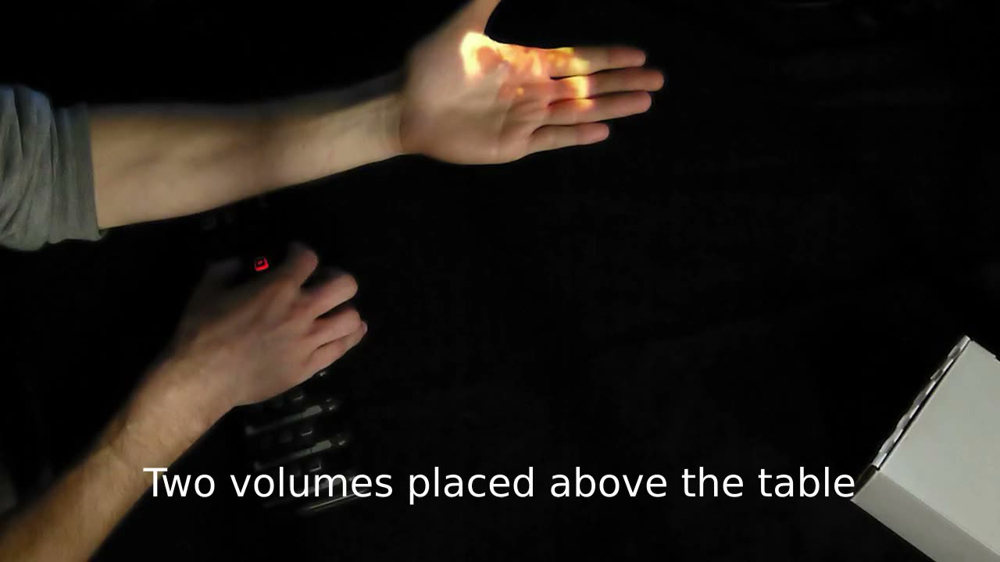
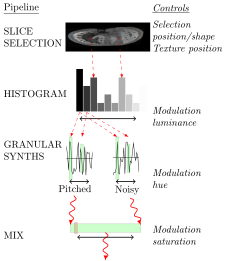
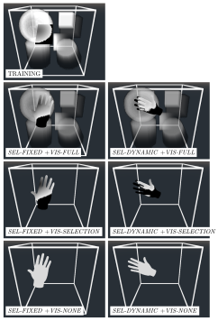
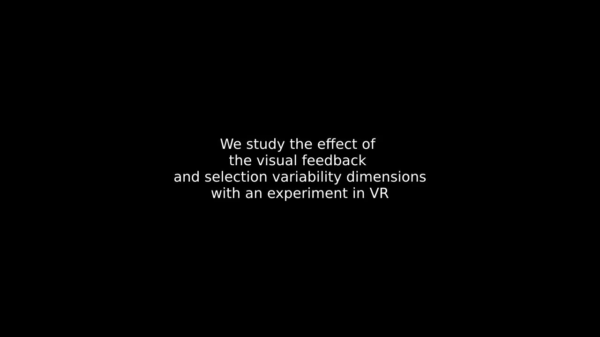
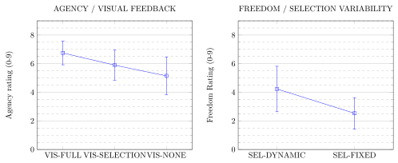

Musical Exploration of Volumetric Textures in Mixed and Virtual Reality
Author Keywords
Virtual Reality, Mixed-reality, Volumetric textures
CCS Concepts
•Applied computing → Sound and music computing; Performing arts; •Human-centered computing →Virtual reality; •Human-centered computing→User studies;
Abstract
The development of technologies for acquisition and display gives access to a large variety of volumetric (3D) textures, either synthetic or obtained through tomography. They constitute extremely rich data which is usually explored for informative purposes, in medical or engineering contexts. We believe that this exploration has a strong potential for musical expression. To that extent, we propose a design space for the musical exploration of volumetric textures. We describe the challenges for its implementation in Virtual and Mixed-Reality and we present a case study with an instrument called the Volume Sequencer which we analyse using your design space. Finally, we evaluate the impact on expressive exploration of two dimensions, namely the amount of visual feedback and the selection variability.


Musical exploration of volumetric textures : (a) Mixed-reality Volume Sequencer with two volumes (brain and tomato scans) being played. (b) Virtual reality instrument with a virtual hand intersecting a brain scan
Introduction
The design of Digital Musical Instrument (DMIs) is often enriched through the integration of new technologies, concepts and physical or digital materials. In particular, the access to rich data in various media (text [1][2], images [3][4], sounds [5]) supports the design of instruments based on expressive exploration.
Volumetric (3D) textures provide access to the densities and eventually colours, discretised as voxels (volume elements), inside physical objects or organisms and inside virtual / synthetic content. These textures can be acquired through various techniques, they give access to more or less detailed representations, and they can be extracted from numerous sources : humans, animals, plants, objects, generative synthesis ... They therefore constitute a fertile ground for the design of DMIs which would use these textures in the mappings or sound synthesis stages.
With advances in 3D displays and interaction devices, such as Virtual Reality (VR) and Mixed-Reality (MR) headsets and mobile Augmented-Reality (AR) applications, we believe that volumetric textures can move from an informative role [6] to a truly creative role [7].
Because they are three-dimensional, volumetric textures naturally integrate with existing instruments in the physical space using mixed-reality displays. They also allow for a large variety of gestures and interaction techniques in both VR and MR, drawing advantages from advances in 3D User Interfaces.
In this paper, we investigate the exploration of 3D textures in the design of MR and VR instruments, as illustrated in Figure 1, focusing on the selection mechanisms and how they might impact musical interaction.
Related work
Here we report related work on the sonification of 2D and 3D graphical content and on the use of exploration in musical expression.
Sonification of 2D textures
The sonification of 2D textures / images has led to a number of research for the design of DMIS. McGee et al. [4] describe an image sonification technique based on multi-touch gestures. Arslan et al. [3] propose to sonify live-captured frames from a smartphone camera using the extracted optical-flow and gestures on the touchscreen. Johnston et al. [8] propose to use audiovisual 2D fluid simulations for musical expression.
Sonification of 3D shapes and structures
Sonification of three-dimensional objects encompasses instruments based on physical modelling, on the shape of virtual objects and on point clouds. Leonard and Cadoz [9] describe a series of virtual musical instrument based on physical modelling, therefore sonifying the behaviour of 3D masses and springs. Fels et al. [10] propose the use of a virtual 3D sculpture metaphor for increasing transparency in musical control. Gholamalizadeh et al. [11] explore the sonification of 3D shapes which they use as a substitute for visualization. With the same intent, Commère et al. [12] investigate the sonification of 3D point clouds. Although they usually providing only the surface of scanned objects, they can be considered as partial volumetric textures from a physical space. However, the authors do not address the musical or expressive use of this data.
Sonification of 3D textures
To our knowledge, little research has been done on the musical sonification of 3D textures. Stockman et al. [13] describe multiple sonification metaphors and techniques. They first use a chime rod metaphor which maps voxels to notes whose pitch depends on the relative position of the voxel inside the rod. They also explore metaphors for harmonic and melodic control based on interaction with volumes. However, their investigation of interaction opportunities remains limited, in part because they do not explore the use of VR or MR displays. Rossiter et al. [14] propose to sonify 3D textures through the spatialization of sounds using absolute voxel coordinates. They investigate both the mapping with the parameters of a single sound and with multiple sounds (one per selected voxel density range). However, they only focus on fixed selection shapes, which they translate within the volumes.
Musical Exploration
Exploration has been the subject of much research in musical interaction. Dahlstedt et al. [15] investigate the exploration of sound spaces using mappings with dancers movements. Benjamin and Altosaar [16] present a system for the exploration of music samples using a 2D graphical interface. Corpus-based concatenative synthesis, introduced by Schwarz et al. [5], provides another example where a graphical interface allows users to explore sound samples placed in a 2D space according to extracted audio features. Kiefer [17] investigates sonic exploration using a haptic malleable interface. Finally, Tubb and Dixon [18] examine two graphical interfaces for the exploration of parameter spaces. Their results suggest that different types of interfaces afford different types of exploration, convergent or divergent. 3D textures can also be seen as complex parameter spaces which corresponds to advanced mapping strategies such as interpolation or many-to-many mappings. In fact gestures that influence the selection of voxels might result in complex and numerous changes of the voxel values which will be sonified.
Contribution
Our contribution is three-fold: 1) We propose a design space for musical exploration of 3D volumetric textures with 7 dimensions. 2) As a case study, we present a MR instrument, the Volume Sequencer, and analyse it using our design space. 3) We study the impact of two of the dimensions on the user experience with a VR instrument.
Musical Exploration of Volumetric Textures
Much like sound samples or 2D images, volumetric (or 3D) textures constitute a rich material which opens up opportunities for the expressive control of sound, beyond their informative role. They are composed of voxels (elements of volume), whose value usually corresponds to a sampled density inside the volume, sometimes to a colour. 3D textures can be either generated or captured using tomography techniques. Synthesis can for example be performed using signed distance functions which can generate volumes from combinations of primitives, or using procedural synthesis techniques. Tomography allows for capturing 3D textures from physical objects or organisms using various techniques such as ultrasound or magnetic resonance imaging. Acquired textures are then stored in one of the many available formats (DICOM, pvm ...) at various resolutions and quantizations. A number of open datasets can be found online1 which constitute a rich material for sonic exploration. With advances in 3D user interfaces and the generalisation of virtual and mixed reality technologies, 3D textures can now be efficiently integrated as additional or essential components of DMIs. In order to understand what volumetric textures afford for musical expression, it is essential to formalize the dimensions of their expressive exploration and what impact these dimensions may have.
Design space
In this section we propose a comprehensive design space for the musical exploration of volumetric textures, composed of 7 dimensions. We believe that it can inform the design of novel instruments, as shown for example by Berthaut et al. [19] in the case of an AR display technology. We demonstrate the use of this design space with a case study on a Mixed-Reality instrument.
The chosen dimensions aim at describing the information that can be extracted from volumetric textures and how it can be extracted in the context of musical interaction, i.e. for the control of sound. These dimensions do not address the mapping of values from 3D textures to sound parameters, i.e. their actual sonification, only the selection of these values. Because potentially any sound parameter can be mapped to the extracted values, we believe that this aspect requires a separate investigation of the various possible strategies and implementations.
Texture Type
The first dimension describes the texture itself and its properties. It has an impact on the predictability / controllability of the sound output but also on its diversity. Textures can be :
Static : scans, synthetic textures
Dynamic : animated/moving scans as used in our case study, real-time acquisition
Reactive : e.g. with 3D fluid simulations [20], using feedback from sound
Output values
This dimension pertains to what information is extracted from each voxel in the 3D texture. It can be one or a combination of the following :
Voxel Value : density or color (RGB, HSV, ...)
Absolute Position (x,y,z) of voxels in the volume
Relative Position (x,y,z) of voxels in selection shape
Speed dx,dy,dz of voxels motion for reactive textures
Retrieving positions in addition to voxel values might increase the degree of control, since the position within the volume can be selected more directly than the actual content of the texture. Relative position is for example used by Stockman et al. [13] while absolute position is mapped to sound spatialization by Rossiter et al. [14].
Output reduction
This dimension relates to how the voxels values are aggregated / combined before being mapped to sound parameters. It has an impact on computing load (i.e. how many values need to be mapped) but also on the potential diversity of musical output. It has the following (possibly combined) values :
Single value : mean/median/range
Reduced number of values : histogram, features extraction ...
Full : per voxel values
Selection dimension
This dimension describes which type of selection can be made from the texture. It has the following values :
2D / Surface : real-time depth image, virtual plane …
3D / Volume : 3D primitives, complex meshes …
Volume selection, as used in [13], can encompass the full texture or a single voxel. Surface selection, as used in [14], will always only give access to a subset of the 3D texture, but might result in a more comprehensible visual and auditory feedback than a volume selection, and in turn a higher sense of agency, i.e. how in control of the sound musicians feel.
Selection variability
This dimension pertains to the amount of control one has over the selection. Traditional selections for visualisation have a fixed shape, usually a plane, which can be simply translated inside the volume. More advanced selection will allow for the Rotation/Scale/Translation (RST) transformations of the shape. Finally, the selection can be dynamic, with changes in the actual shape. An example is the use of a hand (virtual or physical), as presented in our case study below.
This dimension has the following possible values :
Fixed : fixed selection shape, only translated through the volume
Transformed fixed : fixed shape but with full transformations
Dynamic : dynamic shape
Selection control
Selection control described if the selection is performed manually or if it is automated. Automation might allow for more accurate temporal and spatial selection of content while manual control results in a more inaccurate selection but also generate unexpected sonic outcomes in the exploration of textures.
This dimension has the following values (which can be combined) :
Manual : interactively manipulated by the user
Automated : parametric transformation, physics engine ...
Visual feedback
Visual feedback describes how much of the texture is visualised during sonification. More feedback may facilitate accurate control, allowing one to anticipate the sonic outcome of a selection, while less feedback will encourage the free exploration and potentially result in new sonic outcomes.
This dimension can take the following values:
Full : all voxels, even when not selected, are displayed
Selection only : only selected voxels are displayed
None : no voxels are displayed, only the sound output is perceivable
Examples for these three values can be seen in the conditions of our experiment in Figure 5.
Rendering and Mapping
Visual rendering of 3D textures can be performed in two ways, depending on if the selection is a surface or volume. If it is a surface, the 3D coordinate of each pixel of the surface relative to the volume is computed. This normalized coordinate is then use to select a voxel within the 3D texture and assign the corresponding density to the rendered pixel. If it is a volume, the colour of each visible pixel is computed by accumulating the densities of voxels along rays which go across the volume towards the virtual camera (or user’s eye). Extraction of the output values from the selected voxels so that they can be mapped to sound parameters can then be done in one of two ways. A first method, that we used for the implementation of our VR experiment, is to render the selection to a 2D texture, using an additional virtual camera which can be attached to the selection tool. Features of the selection are then extracted using image analysis techniques (histogram, mean colour, ...). A second method is to perform some of the extraction during the rendering step on the GPU as proposed by Berthaut et al. [19]. In this case, values from the selected voxels are accumulated and written to an output texture. This texture is then simply parsed on the CPU with a few operations required to assemble the features sent for mapping. While the first method is easier to implement, it may suffer from added latency because of the image processing done on the CPU. It also prevents the use of per-voxel values, e.g. with FULL Output Reduction.
Example uses

Example uses of volumetric textures : (a) VR instrument with navigation in a large-scale 3D texture (b) VR instrument with animated textures and selection planes (c) Spatial AR with a volume placed in the physical space selection using an acoustic instrument (d) Mobile AR with navigation around 3D textures placed in a room
Thanks to advances in VR and MR display technologies, volumetric textures can be integrated in a number of musical expression contexts, as shown in Figure 2. In VR, navigation techniques can be used to move through large scale 3D textures, which would then appear as a rich 3D landscape with zones of various densities, using the musician’s body for the selection. But we also envision environments composed of many small volumes which can be manipulated individually and a set of selection tools (planes, boxes, spheres ...) which can be animated to generate musical sequences. In a mixed-reality context, Spatial Augmented-Reality displays can be used to augment acoustic/electric instruments with 3D textures placed in the physical space around the instruments or the musician, as done in the volume sequencer presented in section . Intersecting these textures using body parts or the instrument allows for controlling audio effects on the instrument output or even complementary sound processes with a rich parameter space. Another possibility is the use of mobile AR (i.e. using a smartphone or tablet) to physically navigate in a scene of 3D textures. In this case, the mobile device serves as a 2D selection tool which could also provide additional controls on the texture using a combination of camera + touchscreen techniques [3].
Case study : the Volume Sequencer


Playing the volume sequencer : (a) dynamic selection with both hands, (b) fixed selection with tangibles, (c) technical setup showing the depth camera and projector and the outline of the 3D textures hovering above the table
As a case study for an instrument that relies on the exploration of 3D textures, in this section we describe the Volume Sequencer. The idea behind this instrument was to add to the 3D texture exploration a sonic exploration by mapping histogram bins with granular synthesisers at various positions within sound samples. During the interaction, both the content of 3D textures and the positions of synthesiser can be controlled, resulting in a audiovisual exploration.

▶Example use of the Volume Sequencer
Implementation
As shown in Figure 3, this instrument uses Spatial Augmented Reality (SAR), through the combination of a depth camera and a projector, to allow musicians to slice through the 3D textures placed in mid-air. Slicing can be performed either with the hands or with objects of various sizes and shapes placed on the table. The slice is re-projected in the physical space, following the approach proposed by Cassinelli and Ishikawa [21] and Berthaut et al. [19] . In its current form, the Volume Sequencer uses two 3D textures placed side-by-side over the table. Using a MIDI controller, the musician has access to a number of controls over the vertical motion (between 15cm and 5cm over the table) and modulation colour (with which all voxels values are multiplied) of these textures :
Starting/Stopping the vertical motion
Reversing the motion
Restricting the motion to half the normal range
Changing motion speed
Selecting a motion curve between continuous, discrete and with gaps
Changing the luminance and saturation of modulation colour with continuous controls
Changing the hue of modulation colour with discrete controls


Architecture of the Volume Sequencer
Once captured, slices are mapped to sound parameters as shown in Figure 4. A histogram of the luminance of voxels is generated together with the mean luminance, hue and saturation and the extent of displayed texture. Each 3D texture is associated with 2 samples, one containing pitched sounds (piano notes, strings ...), the other containing non-pitched sounds (percussions, noises ...). Each histogram bin is associated with two granular synthesisers (one on each sample), centred at different positions along the samples (see Figure 4 ), and whose output is low-pass filtered with an increasing cut-off frequency. Each synthesiser gain is mapped with the associated histogram bin value. The mean saturation is used as a cross-fader between the two samples (only the pitched one when the saturation is 1, and vice-versa), and mean hue controls the offset of all granular synthesiser windows as shown in Figure 4. The modulation colour luminance, directly controlled by the musician, influences the overall histogram, shifting bin values and therefore changing the mix of granular synthesisers. Finally, a sudden reentry in the texture (detected through the extent of texture shown) which happens for example when there are gaps in the motion, triggers the playback of the original sound at all granular positions. This allows one to play the attacks in the original sound.
Dimensions analysis
Using the design space that we proposed, we can analyse the Volume Sequencer to evaluate its use of 3D textures. Output values is the voxel value, in our case colour in HSV format. Agency could however be increased with the use of the 3D position of voxels for example, which would add more predictable changes in the sound. Output reduction combines a histogram of luminance with mean value for colour. Selection dimension is 2D since it corresponds to the surface captured by the depth camera and the selection variability is either transformed fixed or dynamic because this surface can be created with any physical object, therefore with various shapes and sizes. Figure 3 illustrates the use of both the hands and tangibles. Compared to a VR implementation, a 2D selection shape limits the variety of subsets of the 3D texture that can be selected but might also be visually more understandable for the musician. Visual feedback is selection only. This increases the exploratory aspect but makes it harder to know where the animated texture is. Our SAR implementation could therefore be combined with an AR headset for full visual feedback. Texture type is dynamic, with the animation of texture position on the Y axis. A reactive one using for example fluid simulation would allow for variations on the texture when sliced by static objects. Finally, the selection control is completely manual. Using shape changing or actuated objects instead of static boxes for automated selection control would increase the input freedom.
Effect of exploratory degree on musical expression
We designed an experiment to formally evaluate the impact of our design space on musical expression. We limited ourselves to the evaluation of two dimensions, namely Visual feedback and Selection variability, leaving the other to future research. These dimensions were chosen because they have a strong impact on the exploratory degree : i.e. how much the user is allowed and encouraged to explore the volume. Visual Feedback changes the amount of visual cues the user has to find specific sonic outcomes in the texture, forcing them to explore more if it is low. Selection variability changes the variability of sonic outcomes from a same position in the volumetric texture, so that users are given more or less constraints in the exploration. We chose a VR implementation for the experiment, which allows for easier control over the level of Visual Feedback . We decided to investigate the impact of these dimensions on the understanding of textures and on multiple components of musical expression : agency (perceived degree of control) and the perceived dimensions of instrument efficiency proposed by Jordà [22] (input complexity, output complexity and player freedom).
Our hypotheses were that :
a reduced visual feedback would increase input complexity and reduce structure understanding.
compared to a fixed selection variability, a dynamic one would increase player freedom, sense of agency and the perceived output complexity
Protocol
Due to the COVID-19 pandemic, the experiment was conducted remotely, with participants equipped with an Oculus Quest 1 or 2 (which implements free hand tracking), recruited through mailing-lists and online forums. Participants first accessed an online survey. After consenting to the use of their anonymised data, answers and logs, they were given instructions to download the experiment application and install it on their headset. They then took the experiment which lasted for about 25mn, before returning to the online survey to upload the logs from the experiment and provide feedback and ranking on the conditions. In order to avoid distractions in such an "in-the-wild" setting, we kept the experiment short and asked participants to make sure they had at least 40mn of free time ahead of them. They were also asked to remain seated during the experiment.


Experimental conditions
We used a within-subject design with the factors Visual Feedback (with values VIS-FULL , VIS-SELECTION , VIS-NONE ) and Selection Variability (with values SEL-FIXED and SEL-DYNAMIC ), resulting in 3 × 2 = 6 conditions. The conditions are depicted in Figure 5 with an additional training condition, used to reduce learning bias. For SEL-DYNAMIC conditions, the selection is a fully animated hand, i.e. its corresponds exactly to the movements of the participant’s hand and fingers. For SEL-FIXED conditions, the selection is a virtual non-animated hand attached to the participant’s right hand but which can only be translated, i.e. not rotation or finger movement is possible. We chose to use a non-animated hand instead of another fixed shape (e.g. box, sphere) to limit the discrepancies between conditions, in particular regarding the selection surface. In the TRAINING condition, the selection is a plane. For VIS-FULL and TRAINING conditions, the full texture is rendered, in addition to the selection created on the surface of the hand. For VIS-SELECTION conditions, only the selected voxels are shown on the surface of the hand. For VIS-NONE conditions, the hand surface remains white, i.e. the selection is not shown.
Stimuli
Seven synthetic 3D textures with a resolution of 100 × 100 × 100 and voxel values between 0 and 255 were generated, each composed of a different combination of the following volumes : a sphere with gradient between 0 and 255 from its centre to its surface, three cylinders with a gradient along their height and oriented along either the X, Y or Z axis, four small boxes with constant voxels values (35, 70, 145, 255). We also created 7 sound presets each composed of 6 tracks of pulsating notes with increasing pitch and brightness. Each track was associated with a luminance histogram bin, i.e. the number of pixels in that bin is mapped to the gain of the corresponding track. Associations of 3D textures and sound presets were counterbalanced across participants using a balanced Latin square design. The experiment application, including volumetric rendering and sonification, was built using the Godot Engine.2

▶Experimental conditions
Procedure
After answering questions about their age and expertise with VR, music and 3D textures, participants successively undertook the same task under each condition. They all started with the training condition but the order of the other 6 conditions was counterbalanced across participant to control the order effect. For each condition, participants were shown a white frame containing the 3D textures (visible or not) and were asked to explore it to find as many musical variations as they could. They were told that the duration of the exploration would be between 60 and 120 seconds, even though all explorations lasted exactly 90 seconds, and that they would have to estimate the actual duration after the task.
After the exploration, participants were asked the following questions (we provide the range and corresponding dependent variable) :
Rate your degree of control over the sound (1-10, agency)
Rate the diversity of sound variations that you found (1-10, output complexity)
Rate how difficult it was to control the sound (1-10, input complexity)
Rate the diversity of gestures you could make to control the sound (1-10, player freedom)
Rate your understanding of the structure of the 3D texture (1-10, understanding)
Estimate the duration of the task between 60 and 120 seconds (duration)
The prospective time estimation [23] was used as a measure of cognitive load, i.e. another measure of the input complexity.
Participants
10 participants (all male and right-handed) took part in the experiment. They were aged of mean=27.5 (sd= 8.58, min= 16, max= 47). They rated their expertise with VR between 0 and 4 with mean=3.1 (sd=0.74, min=2, max=4), their expertise with music with mean=1.33 (sd=0.82, min=0, max=3), and their knowledge of volumetric textures with mean=1.22 (sd=0.92, min=0, max= 2). We chose to not to restrict the experiment to expert musicians to obtain a variety of opinions regarding the input complexity and sense of control.
Results


Results for Agency grouped by Visual Feedback and for Freedom grouped by Selection Variability
Shapiro-Wilk tests revealed no deviation from normality in the data. We therefore performed a repeated measures two-way ANOVA for each dependent variable, followed by post hoc t-tests with Holm-Bonferroni correction in case of significant results. Statistical analysis was performed using JASP 0.13.1. Values for significant results are shown in Figure 6.
We did not find any statistically significant main effect of Visual Feedback or Selection Variability nor interaction on the following dependent variables : Duration, Input Complexity, Output Complexity, Understanding.
We found a statistically significant main effect of Visual Feedback on the Agency variable (F(2,18)=5.361, p=0.015), but no significant main effect of Selection variability nor significant interaction. Post hoc tests revealed that Agency was rated significantly higher for VIS-FULL than VIS-NONE (mean difference=1.6, p=0.013).
We found a statistically significant main effect of Selection Variability on the Freedom variable (F(1,9)=6.082, p=0.036), but no significant main effect of Visual Feedback nor significant interaction. Post hoc tests revealed that Freedom was rated significantly higher for SEL-DYNAMIC than for SEL-FIXED (mean difference=1.7, p=0.036).
Finally, when looking at the ranking of conditions, a Chi-Square test of independence revealed a statistically significant relation between the condition and ranking (X2 (25, N=54)=71.33, p<0.0001). The preferred conditions were VIS-FULL+SEL-DYNAMIC and VIS-SELECTION+SEL-DYNAMIC . Interestingly, the animated hand condition, even without visual feedback (VIS-NONE +SEL-DYNAMIC), is mostly ranked above non-animated hand conditions, even when they provide visual feedback.
Discussion
Results from this study should however be taken with caution as the number of participants remains fairly low and because all participants were right-handed male, due to online recruitment restrictions. Our findings should therefore be confirmed with a study with more and more diverse participants, in a lab settings to avoid potential bias caused by remote experimental conditions.
Effect of visual feedback
These preliminary results however suggest that the amount of visual feedback has an influence over the sense of agency, i.e. how in control of the sound participants felt. We hypothesize that this could be due to the ability to see what part of the texture they were moving to when exploring the volume, and therefore to predict what sonic outcome they would obtain. This was confirmed by comments from participants such as P4 “I feel I can better see where the sounds are when I see the texture”, and multiple participants insisting on the “increased difficulty” (P10), required expertise (P2), “bad experience” (P2,P3), “little control” (P1) in conditions with no visual feedback. However some comments provided when there was no visual feedback seem to suggest a shift in exploration strategies : some participants focused on “finding sounds” (P5), exploring the “full space” (P3) and noticed a “higher diversity of sounds” (P6).
Effect of selection variability
Our results also suggest that using a dynamic selection variability positively influences the sense of player freedom, i.e. the diversity of gestures participants could perform to control the sound. While this result seems somewhat obvious when transitioning from a non-animated hand to an animated one, participants also insisted in their comments on the added precision of control (P2, P5), sensation of control (P1, P6) and confidence in their action (P2) that a dynamic selection afforded. Multiple participants reported the non-animated hand to be “disturbing”, “breaking the experience” (P2) and reducing their feeling of control (P1, P10), in part because they expected the selection to match the range of expression afforded by free hand tracking. This would suggest that participants should be given the maximum selection variability provided by the interaction device, e.g. full animated hand when hand tracking is possible, or at least 6 degrees-of-freedom transformation of the selection if using a rigid controller.
Conclusion
In this paper, we investigated musical expression with volumetric textures in Mixed and Virtual Reality. We proposed a design space which can inform the creation of novel instruments, described a case study of Spatial Augmented-Reality instrument and studied the effect of two of the dimensions on the user experience. Our results suggest that, as could be expected, Selection Variability has an effect on the player freedom, and more interestingly that Visual Feedback influences the sense of agency.
We have left aside the investigation of mapping strategies of voxel values to sound parameters, i.e. the actual sonification of data, in order to focus on the design space for the selection of voxel values. Future work will explore these mapping strategies and in particular how to perform sonification inside the rendering pipeline, following Zappi et al. [24], to enable per-voxel mapping. Such a technique would also allow for evaluating the impact of the output values and output reduction dimensions of our design space. Finally, we will look at the integration of haptic feedback, which might reinforce the sense of agency created by visual feedback.
Compliance with Ethical Standards
All subjects participated voluntarily and signed an informed consent form.
Citations
- ↩Alt, F., Shirazi, A. S., Legien, S., Schmidt, A., & Mennen’́oh, Julian. (2010). Creating Meaningful Melodies from Text Messages. In Proceedings of the International Conference on New Interfaces for Musical Expression (pp. 63–68). Sydney, Australia. https://doi.org/10.5281/zenodo.1177713
- ↩Dahl, L., Herrera, J., & Wilkerson, C. (2011). TweetDreams : Making Music with the Audience and the World using Real-time Twitter Data. In Proceedings of the International Conference on New Interfaces for Musical Expression (pp. 272–275). Oslo, Norway. https://doi.org/10.5281/zenodo.1177991
- ↩Arslan, C., Berthaut, F., Martinet, J., Bilasco, I. M., & Grisoni, L. (2018). The Phone with the Flow: Combining Touch+ Optical Flow in Mobile Instruments. In NIME 2018-18th International Conference on New Interfaces for Musical Expression.
- ↩McGee, R. (2013). VOSIS: a Multi-touch Image Sonification Interface. In Proceedings of the International Conference on New Interfaces for Musical Expression (pp. 460–463). Daejeon, Republic of Korea: Graduate School of Culture Technology, KAIST. https://doi.org/10.5281/zenodo.1178604
- ↩Schwarz, D., Beller, G., Verbrugghe, B., & Britton, S. (2006). Real-time corpus-based concatenative synthesis with catart. In 9th International Conference on Digital Audio Effects (DAFx) (pp. 279–282).
- ↩McGuffin, M. J., Tancau, L., & Balakrishnan, R. (2003). Using deformations for browsing volumetric data. In IEEE Visualization, 2003. VIS 2003. (pp. 401–408).
- ↩Williams, D. A. H. (2016). Utility versus creativity in biomedical musification. Journal of Creative Music Systems.
- ↩Johnston, A. (2013). Fluid simulation as full body audio-visual instrument. In New Interfaces for Musical Expression.
- ↩Leonard, J., & Cadoz, C. (2015). Physical Modelling Concepts for a Collection of Multisensory Virtual Musical Instruments. In E. Berdahl & J. Allison (Eds.), Proceedings of the International Conference on New Interfaces for Musical Expression (pp. 150–155). Baton Rouge, Louisiana, USA: Louisiana State University. https://doi.org/10.5281/zenodo.1179116
- ↩Fels, S., Gadd, A., & Mulder, A. (2002). Mapping transparency through metaphor: towards more expressive musical instruments. Organised Sound, 7(2), 109–126.
- ↩Gholamalizadeh, T., Pourghaemi, H., Mhaish, A., & Duff, D. J. (2017). Sonification of 3d object shape for sensory substitution: An empirical exploration. In 10ème conférence Advances in Computer-Human Interactions (ACHI2017) (pp. 18–24).
- ↩Commère, L., Florian, G., Côté, F., & Rouat, J. (2018). Sonification of 3D point clouds for substitution of vision by audition for blind users. In 24ème conference internationale Auditory Display (ICAD 2018).
- ↩Stockmann, L., Berndt, A., & Röber, N. (2008). A musical instrument based on interactive sonification techniques. Audio Mostly, 72–79.
- ↩Rossiter, D., & Ng, W.-Y. (1996). A system for the complementary visualization of 3D volume images using 2D and 3D binaurally processed sonification representations. In Proceedings of Seventh Annual IEEE Visualization’96 (pp. 351–354).
- ↩Dahlstedt, P., & Dahlstedt, A. S. (2019). OtoKin: Mapping for Sound Space Exploration through Dance Improvisation. In Proceedings of the International Conference on New Interfaces for Musical Expression (pp. 156–161). Zenodo. https://doi.org/10.5281/zenodo.3672906
- ↩Benjamin, E., & Altosaar, J. (2015). MusicMapper: Interactive 2D representations of music samples for in-browser remixing and exploration. In Proceedings of the International Conference on New Interfaces for Musical Expression (pp. 325–326). Zenodo. https://doi.org/10.5281/zenodo.1179018
- ↩Kiefer, C. (2010). A Malleable Interface for Sonic Exploration. In Proceedings of the International Conference on New Interfaces for Musical Expression (pp. 291–296). Zenodo. https://doi.org/10.5281/zenodo.1177823
- ↩Tubb, R., & Dixon, S. (2014). The Divergent Interface: Supporting Creative Exploration of Parameter Spaces. In Proceedings of the International Conference on New Interfaces for Musical Expression (pp. 227–232). Zenodo. https://doi.org/10.5281/zenodo.1178967
- ↩Berthaut, F., Arslan, C., & Grisoni, L. (2017). Revgest: Augmenting Gestural Musical Instruments with Revealed Virtual Objects. In International Conference on New Interfaces for Musical Expression. Copenhagen, Denmark. Retrieved from https://hal.archives-ouvertes.fr/hal-01518579
- ↩Johnston, A. (2013). Fluid simulation as full body audio-visual instrument. In New Interfaces for Musical Expression.
- ↩Cassinelli, A., & Ishikawa, M. (2009). Volume Slicing Display. In ACM SIGGRAPH ASIA 2009 Art Gallery; Emerging Technologies (pp. 88–88). Yokohama, Japan. https://doi.org/10.1145/1665137.1665207
- ↩Jordà, S. (2003). Interactive music systems for everyone: exploring visual feedback as a way for creating more intuitive, efficient and learnable instruments. In En Proceedings of the Stockholm Music Acoustics Conference, August (pp. 6–9).
- ↩Zakay, D., & Block, R. A. (2004). Prospective and retrospective duration judgments: an executive-control perspective. Acta Neurobiologiae Experimentalis, 64(3), 319–328.
- ↩Zappi, V., Allen, A., & Fels, S. (2017). Shader-based Physical Modelling for the Design of Massive Digital Musical Instruments. In Proceedings of the International Conference on New Interfaces for Musical Expression (pp. 145–150). Copenhagen, Denmark: Aalborg University Copenhagen. https://doi.org/10.5281/zenodo.1176203